Porque todos en tu equipo son diseñadores UX
08/14/15
Seamos sinceros, es raro ver colaboraciones entre diseñadores UX y el resto de los equipos durante todo el proceso. En la mayoría de lugares donde he trabajado, los diseñadores, desarrolladores y los managers de producto necesitan resolver muchos problemas de UX por su cuenta.
Cosa que no ocurre con el diseño de interfaces, desarrollo Front-End o desarrollo Back-End. Por ejemplo, el código del Front-End es hecho únicamente por el desarrollador Front-End.
Para explicar mejor este problema, inventé un producto (parecido a Gmail), llamado Deliver - un cliente para email muy sencillo - y te mostraré cómo la falta de conocimientos de UX en cada etapa del proyecto, puede hacer que todo salga mal.
Wireframe
Asumamos que tenemos el wireframe básico de nuestra aplicación, hecho por el encargado de UX después de una invesitación apropiada.
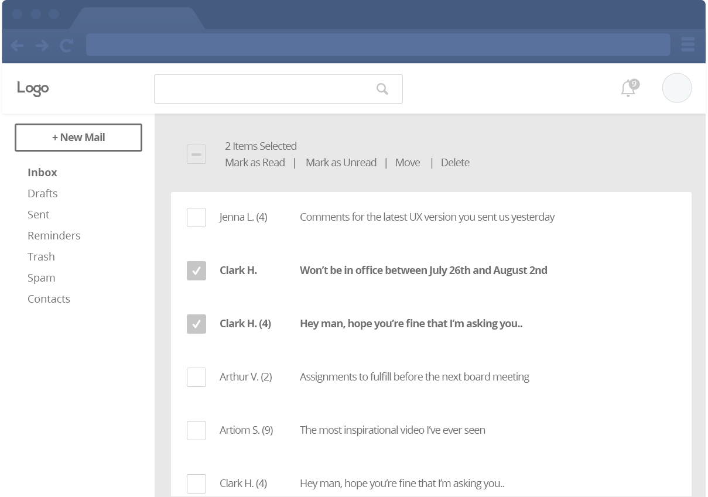
Después de ser aprobado por los jefes, fue enviado a los diseñadores con unos estados y capturas más. A todo el mundo le gustó el diseño y creen que no hay nada que pueda ir mal.
Dos diseñadores diferentes trabajaron en dos versiones. El resultado fue interesante.
Diseñador No. 1
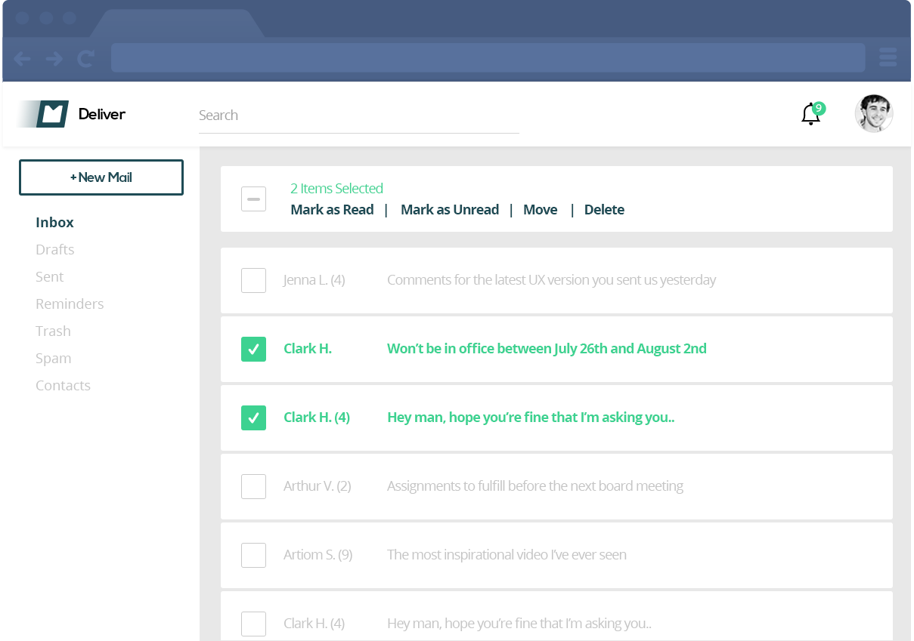
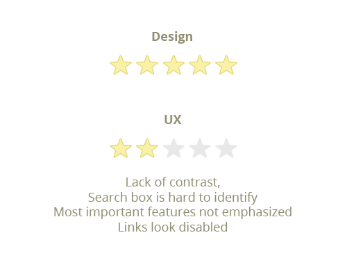
Nota:
- Falta contraste.
- La barra de búsqueda es dificil de encontrar.
- Las características más importantes no están claras.
- Los enlaces parecen deshabilitados.
Diseñador No. 2
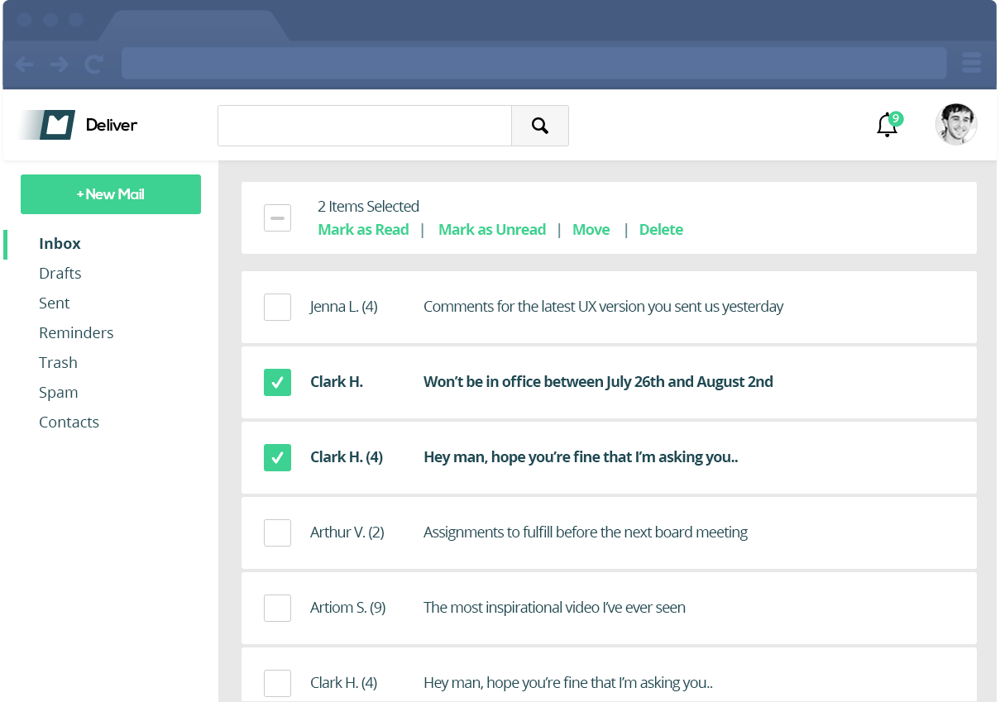
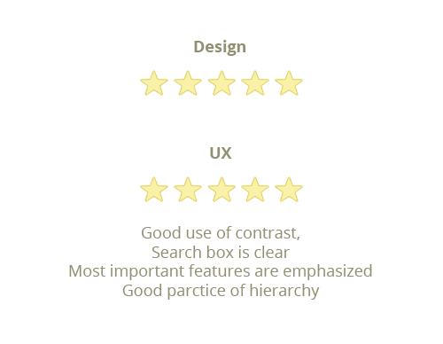
Nota:
- Buen uso del contraste.
- La barra de búsqueda es muy clara.
- Las características más importantes están bien resaltadas.
- Buen uso de jerarquías.
Resumen: Ambos diseñadores hicieron un increible trabajo en cuanto a diseño. Eligieron los colores adecuados, hicieron un buen uso del espacio en blanco y fueron muy consistentes. Pero el diseñador No. 2 dio en el clavo, mientras que el primero fue un desastre en cuanto a UX.
Ahora, una vez el diseño fue aprobado, se envió al equipo de Front-End. De nuevo, ambos tienen dos enfoques diferentes respecto al UX.
Front-End No. 1
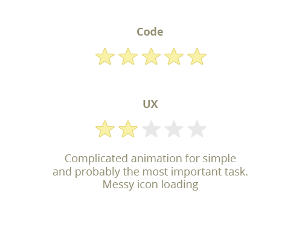
Nota:
- Animación complicada para una tarea sencilla y la más importante.
- Carga desorganizada de los iconos.
Front-End No. 2
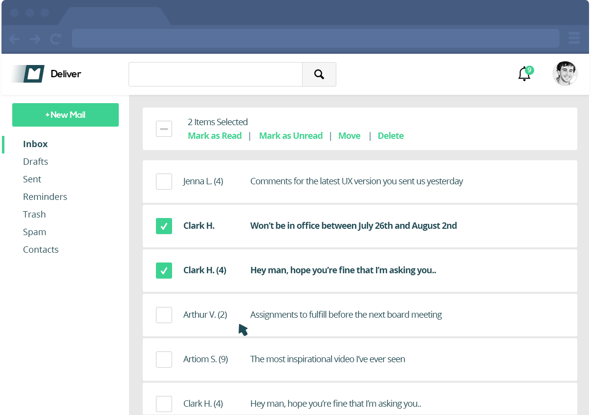
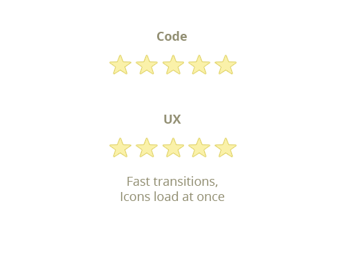
Nota:
- Una transición rápida.
- Los iconos cargan al tiempo.
Resumen: las pequeñas diferencias hacen un gran cambio. Muchos desarrolladores pecan cometiendo esos errores una y otra vez. En nuestro caso, ambos desarrolladores han tenido bastante experiencia, y son buenas personas. Saben como escribir código legible, reusable y limpio. Sin embargo, el Front-End No. 2 contempla la satisfacción de los usuarios.
Después de que uno de los Front-End fuera despedido :) el otro paso su código al lado de los Back-End. Su trabajo es poblar la UI con contenido real desde la base de datos. Veamos lo que pasó.
Back-End No. 1
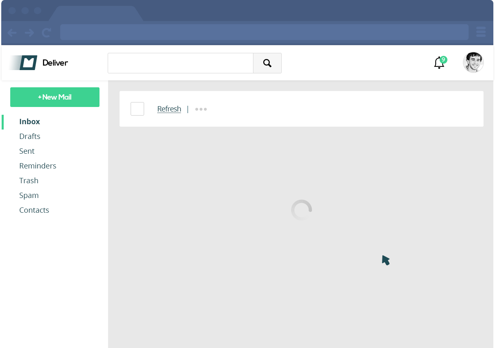
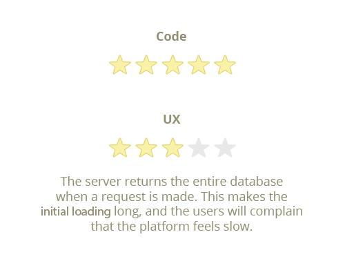
Nota:
- El servidor devuelve toda la base de datos cuando se hace un pedido. Esto hace que la carga inicial sea larga y esto hará que los usuarios crean que la plataforma es lenta.
Back-End No. 2
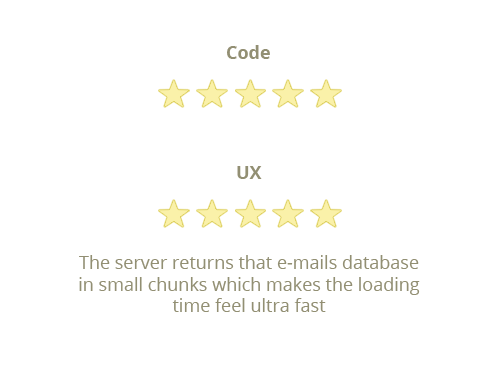
Nota:
- El servidor devuelve los correos de la base de datos en pequeños grupos, lo que hace pensar que la carga es super rápida.
Resumen: el primer desarrollador escribió la plataforma para que cargue los datos más rápido, pero no se dio cuenta que el usuario necesitaba los más recientes, lo más rápido que se pudiera. Esto demuestra que incluso una decisión hecha por un desarrollador (o tal vez, un supervisor) puede causar un gran impacto en toda la experiencia del usuario.
¿Qué podemos aprender de esto?
- Como desarrollador de producto, necesitas agregar el UX bien arriba en tu lista de propósitos.
- Que alguien tenga el título de "Diseñador UX" no significa que solamente el pueda mejorar el UX en tu producto. Es un esfuerzo en conjunto, concidera a todos los de tu equipo como diseñadores UX.
- Aún así, tu querrás un experto en tu equipo. Pero el UX no solamente es hacer una carga más rápida, un diseño limpio y libre de distracciones. Es acerca de pensar en tus usuarios 200% todo el tiempo.
- UX es lo mejor :D
Escrito por Ariel Verber en Medium. Leer artículo original
Tags: Diseño, UX